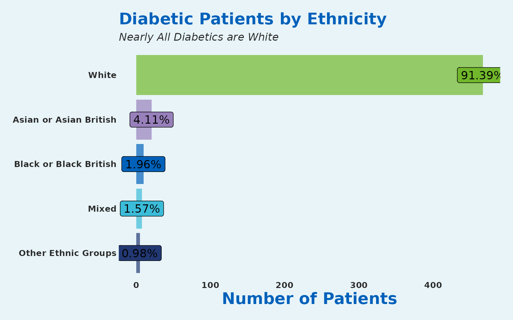
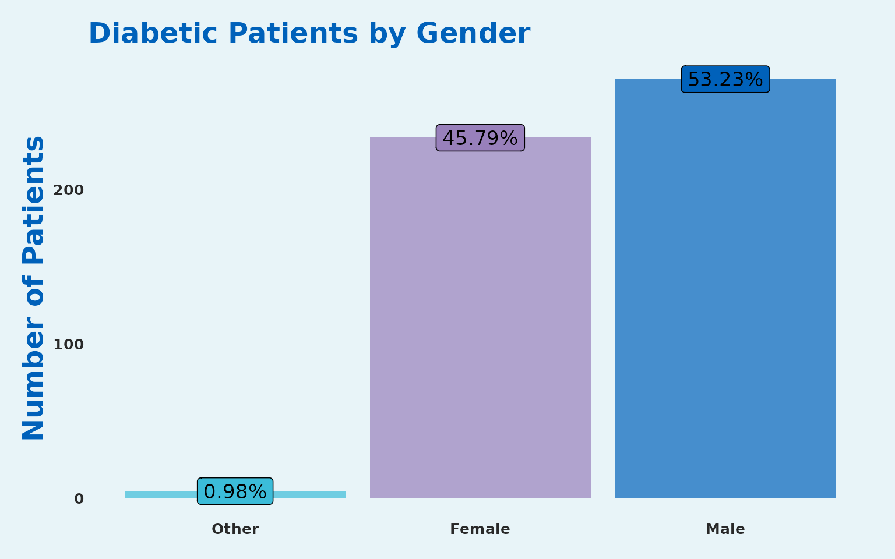
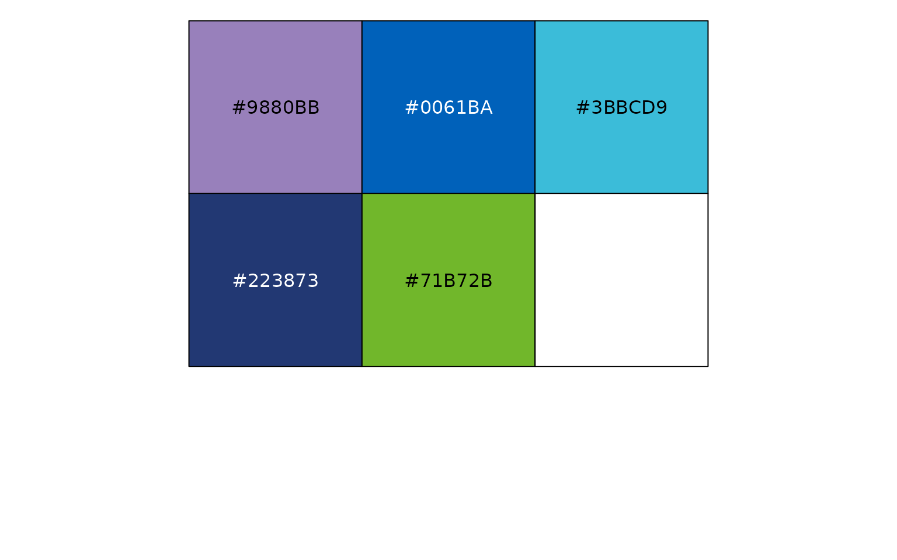
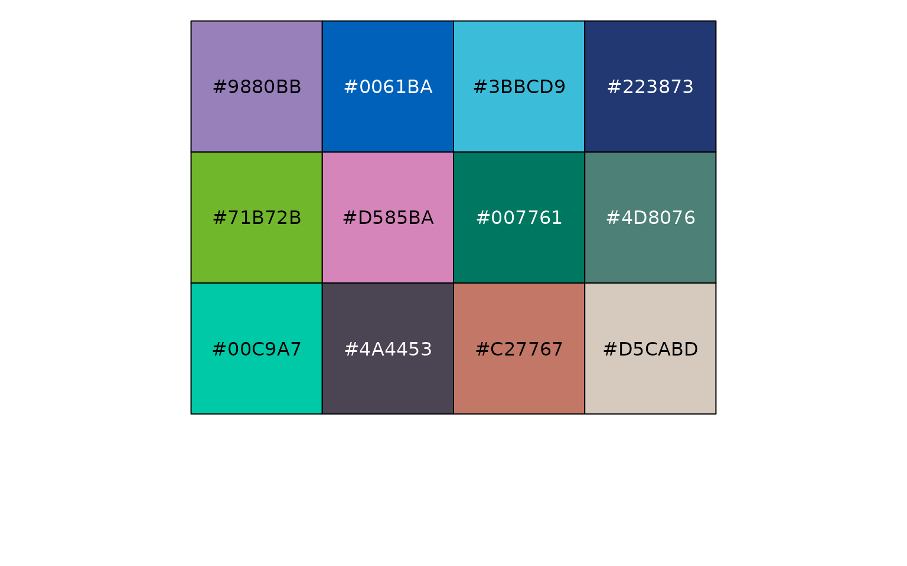

Welcome to the SangerTools package
This package has been created to provide convenient functions for working with population health data. It is specifically aimed at healthcare providers and services that focus on population health management.
Many of the functions are centered around the Master Patient Index format. Where each row is a patient and each column is an observation of that patient.
In the next sections we will take you through how you use the tool.
Loading in Health Data
To load in the Master Patient Index attached to the SangerTools package follow these steps:
health_data <- SangerTools::master_patient_index| Sex | Smoker | Diabetes | Dementia | Obesity | Age | IMD_Decile | Ethnicity | Locality | PrimaryCareNetwork |
|---|---|---|---|---|---|---|---|---|---|
| Female | 1 | 0 | 0 | 0 | 17 | 7 | White | Gloucester City | Tewkesbury, Newent and Staunton and West Cheltenham Medical |
| Female | 0 | 0 | 0 | 0 | 31 | 1 | White | Stroud and Berkeley Vale | North Cotswolds |
| Male | 0 | 0 | 0 | 0 | 34 | 3 | White | Cheltenham | The Forest of Dean |
| Female | 0 | 0 | 0 | 0 | 62 | 9 | White | Gloucester City | Rosebank & Bartongate |
| Female | 0 | 0 | 0 | 0 | 37 | 4 | White | Cheltenham | South Cotswolds |
| Female | 0 | 0 | 0 | 0 | 57 | 9 | White | Cheltenham | Cheltenham Central |
The data contains:
- PseudoNHSNumber - A Pseudonymised NHS Patient Identifier
- Sex - The identifiable sex of the patient
- Smoker - Health Condition Flag: 1 denotes if the patient is a smoker
- Diabetes - Health Condition Flag: 1 denotes if the patient has diabetes
- Dementia - Health Condition Flag: 1 denotes if the patient has dementia
- Obesity - Health Condition Flag: 1 denotes if the patient is Obese
- Age - Age of the patient
- IMD_Decile - The decile of indices of multiple deprivation
- Ethnicity - The identifiable ethnicity of the patient}
- Locality - The region where the patient lives - sampled from Gloucestershire Clinical Commissioning Group (GCCG)
- PrimaryCareNetwork - The network of General Practioners that the patient is registered with - sampled from (GCCG)
With the data we can start to work with the function in the package.
Age bands
It is common practice to transform continuous age values into a smaller set of categories.
There are two functions in the package for doing this.
age_bandizerage_bandizer2
age_bandizer Uses a tidyverse philosophy of function
creation with Non-Standard Evaluation. It will produce a new column with
5 year age bands as a factor.
age_bandizer2 uses Standard Evaluation and currently
takes in puts of band size 2,5,10 & 20.
health_data <- SangerTools::age_bandizer(df = health_data,
Age_col = Age)
health_data <- SangerTools::age_bandizer_2(df = health_data,
Age_col = "Age",
Age_band_size = 5)| Age | Ageband |
|---|---|
| 17 | 15-19 |
| 31 | 30-34 |
| 34 | 30-34 |
| 62 | 60-64 |
| 37 | 35-39 |
| 57 | 55-59 |
Generating a categorical column chart easily
The package makes it very simple to create a categorical column chart. This will be implemented in the next example:
# Group by Ethnicity
diabetes_df <- health_data %>%
dplyr::filter(Diabetes==1)
SangerTools::categorical_col_chart(df = diabetes_df,
grouping_var = Ethnicity)+
scale_fill_sanger()+
labs(title = "Diabetic Patients by Ethnicity",
subtitle = "Nearly All Diabetics are White",
x = NULL,
y = "Number of Patients") +
coord_flip() 
# Group by Sex
health_data %>%
dplyr::filter(Diabetes==1) %>%
SangerTools::categorical_col_chart(Sex) +
scale_fill_sanger()+
labs(title = "Diabetic Patients by Gender",
x = NULL,
y = "Number of Patients") 
It really is that simple to generate very nice looking proportional charts.
Crude Prevalence
Here we will look at the crude rate of diabetes To obtain the crude prevalence rate, this can be achieved below:
crude_prevalence <- SangerTools::crude_rates(df = health_data,
Condition = Diabetes,
Locality)
#> Joining with `by = join_by(Locality)`| Locality | Cohort_Size | Diabetes_Population | Prevalence_1k |
|---|---|---|---|
| The Forest of Dean | 941 | 54 | 57.38576 |
| Gloucester City | 2683 | 149 | 55.53485 |
| Cheltenham | 2524 | 137 | 54.27892 |
| North Cotswolds | 464 | 23 | 49.56897 |
| Stroud and Berkeley Vale | 1841 | 91 | 49.42966 |
| Tewkesbury Newent and Staunton | 649 | 24 | 36.97997 |
| South Cotswolds | 898 | 33 | 36.74833 |
Age Standardised Rates
Let’s revisit the example above. Diabetes is highly confounded by age. Most diabetics will be diagnosed after the age of 40.
asr_prevalence <- SangerTools::standardised_rates_df(df = health_data,
Split_by = Locality,
Condition = Diabetes,
Population_Standard = NULL,
Granular = FALSE,
Ageband )
#> Joining with `by = join_by(Locality, Ageband)`
#> Joining with `by = join_by(Ageband)`| Locality | Standardised_Rate_1k |
|---|---|
| The Forest of Dean | 57.04463 |
| Gloucester City | 55.68534 |
| Cheltenham | 53.97917 |
| Stroud and Berkeley Vale | 49.30150 |
| North Cotswolds | 47.64903 |
| South Cotswolds | 36.60576 |
| Tewkesbury Newent and Staunton | 35.37544 |
Given that each of the Localities now has the population structure of the county as whole; we can see slight differences to the crude prevalence rates.
Age Standardised Rates with User Defined Population Structure
We will use another dataset attached to the package; the UK
population from the year 2018. This is broken down by 5 year age bands.
For a user define population structure to integrate with
standardised_rates_df ensure to change the name of the
population column to Pop_Weight
Load 2018 UK Population Structure
uk_pop18<- SangerTools::uk_pop_standard
names(uk_pop18) <- c("Pop_Weight","Ageband")| Pop_Weight | Ageband |
|---|---|
| 3,914,000 | 0-4 |
| 4,139,000 | 5-9 |
| 3,859,000 | 10-14 |
| 3,669,000 | 15-19 |
| 4,185,000 | 20-24 |
| 4,527,000 | 25-29 |
UK Age Standardised Diabetes Prevalence
asr_uk <- SangerTools::standardised_rates_df(df = health_data,
Split_by = Locality,
Condition = Diabetes,
Population_Standard = uk_pop18,
Granular = FALSE,
Ageband )
#> Joining with `by = join_by(Locality, Ageband)`
#> Joining with `by = join_by(Ageband)`| Locality | Standardised_Rate_1k |
|---|---|
| The Forest of Dean | 49.58949 |
| Gloucester City | 49.57563 |
| South Cotswolds | 47.70326 |
| Cheltenham | 47.67118 |
| North Cotswolds | 42.12233 |
| Stroud and Berkeley Vale | 41.66005 |
| Tewkesbury Newent and Staunton | 30.12367 |
Combining Results
To view both crude and standardised rates we can use
dplyr::left_join
| Locality | Cohort_Size | Diabetes_Population | Prevalence_1k | Standardised_Rate_1k |
|---|---|---|---|---|
| The Forest of Dean | 941 | 54 | 57.38576 | 57.04463 |
| Gloucester City | 2683 | 149 | 55.53485 | 55.68534 |
| Cheltenham | 2524 | 137 | 54.27892 | 53.97917 |
| North Cotswolds | 464 | 23 | 49.56897 | 47.64903 |
| Stroud and Berkeley Vale | 1841 | 91 | 49.42966 | 49.30150 |
| Tewkesbury Newent and Staunton | 649 | 24 | 36.97997 | 35.37544 |
| South Cotswolds | 898 | 33 | 36.74833 | 36.60576 |
Other functionality added into the package would be to use the multiple CSV reader and clipboard functions.
Excel Clipboard function
This copies a data frame to the clipboard for you for then pasting into Excel sheets, or csvs, or raw text.
SangerTools::excel_clip(combined_rates)There is the potential to read from multiple CSVs as well and then these can be fed into data frames.
Multiple CSV reader
To implement this function you would need to have a number of CSVs contained in a folder. To read these in, follow the below instructions:
file_path = 'my_file_path_where_csvs_are_stored'
if (length(SangerTools::multiple_csv_reader(file_path))==0){
message("This won't work without changing the variable input to a local file path with CSVs in")
}
#> This won't work without changing the variable input to a local file path with CSVs inmultiple_excel_reader is the equivalent for excel files;
however please read function documentation page as both functions have a
strict set of requirements for execute.
Splitting Dataframes and Saving
split_and_save is a quick way to split a dataframe on a
specified column into subsequent dataframes after which each of
dataframes is dynamically written to a location choice
SangerTools::split_and_save(
df = health_data,
Split_by = "Locality",
file_path = "Inputs/",
prefix = NULL
)Results to SQL
Write your results to SQL Server ensuring that the table name appears as expected.
This function makes a number of assumptions and is limited in scope; please read documentation.
SangerTools::df_to_sql(df = combined_rates,
driver = "SQL SERVER",
server = "Org-sql-db",
database = "MyReports",
sql_table_name = "Diabetes_Prevalence",
overwrite = FALSE)See Brand Colours
This is an anonymous function and can be called without any arguments

#> [1] "#9880BB" "#0061BA" "#3BBCD9" "#223873" "#71B72B"See More Colours
This is also an anonymous function; it will show an extended colour palette

#> [1] "#9880BB" "#0061BA" "#3BBCD9" "#223873" "#71B72B" "#D585BA" "#007761"
#> [8] "#4D8076" "#00C9A7" "#4A4453" "#C27767" "#D5CABD"Closing
More functions are being added to this tool and a new version of the file will be released on CRAN very soon. Keep an eye out on the associated GitHub for updates.